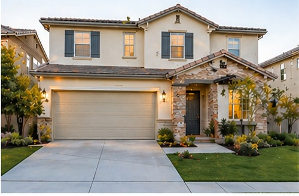
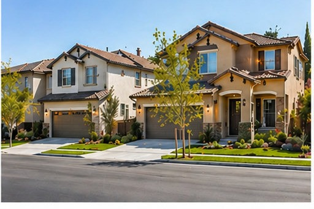

真实案例
先看结果，再看过程
每个案例都尽量说清楚客户当时担心什么、我实际做了什么，以及最后换来了什么结果。

Irvine | Condo | 2B2B
7天内成功出租
客户情况：房子空置一段时间，客户不确定市场租金。
我当时怎么判断：空置时间本身就是成本。与其守着一个拍脑袋的数字，不如先看同社区正在租的同类房长什么样、挂了多久，再决定从哪个位置切进去。
我做了什么：重新定价、优化照片展示、同步推广。
最终结果：快速找到合适租客，租金达到更理想区间。
其他房东能学到什么：房子空着的每一天都在花钱。定价的目标不是挂到最高，是让它在合理的时间内以合理的价格租出去。

Arcadia | House | 3B2B
筛选稳定家庭租客
客户情况：房东担心租客质量，不想只看价格。
我当时怎么判断：租金高低只是一部分，租客能不能稳定住下去同样影响一年的实际收入。审核要按事先写好、对所有申请人一致适用的标准来看，而不是凭感觉。
我做了什么：重点审查信用、收入、背景与居住计划。
最终结果：找到匹配度高的家庭租客，签约过程顺利。
其他房东能学到什么：把筛选标准提前写下来，逐项核对收入、信用、租房记录，以及这几样材料之间对不对得上。这比看人顺不顺眼可靠，也更合规。

Los Angeles | Apt | 1B1B
降低空置期
客户情况：投资房客户希望现金流稳定。
我当时怎么判断：投资房看的是全年现金流，不是挂牌价。挂高两百块、多空一个月，这一年是亏的。
我做了什么：根据区域租赁需求调整展示和定价。
最终结果：提高询问量，缩短等待时间。
其他房东能学到什么：算账要算全年。把「月租 × 12」换成「月租 × 实际出租月数 − 周转成本」，很多定价决定会立刻反过来。

Rowland Heights | House | 3B2B
第一次房东顺利出租
客户情况：客户第一次出租，不熟悉流程和合同。
我当时怎么判断：第一次出租的房东，最大的风险不是价格，是流程里不知道会踩到什么：申请怎么审、租约条款意味着什么、入住交接要留什么记录。
我做了什么：全程解释申请、筛选、合同与交接。
最终结果：顺利完成出租，后续继续合作。
其他房东能学到什么：入住前把房屋现状拍照存档。退租时押金一旦有争议，这些照片就是你唯一站得住脚的依据。

Diamond Bar | House
卖房包装提升竞争力
客户情况：客户希望卖价理想，但不想长期挂盘。
我当时怎么判断：卖房和出租的第一步是同一件事：挂牌价。挂高了不只是少几组看房，挂久了买家会开始猜这房子是不是有毛病，最后往往还得降更多。
我做了什么：重新梳理定价、展示卖点与市场策略。
最终结果：房源关注度提升。这一条的最终成交数字不便公开，所以只讲做法。
其他房东能学到什么：先看同区最近的成交价，不是只看邻居挂多少。挂牌价是给市场的第一印象，改起来的代价比一开始定对它高得多。

Chino Hills | House
买到更适合的家庭房
客户情况：客户预算有限，但希望兼顾社区和生活品质。
我当时怎么判断：预算有限的时候最怕什么都想要。先把「必须满足」和「可以让步」分开，能看的房子数量会立刻降下来，决策也快得多。
我做了什么：筛选区域、比较房源、协助谈判。
最终结果：锁定更合适房源，顺利完成交易。
其他房东能学到什么：如果是投资房还要多算一层：这套房实际能租多少、空置多久、扣掉持有成本还剩什么，再决定值不值得买。